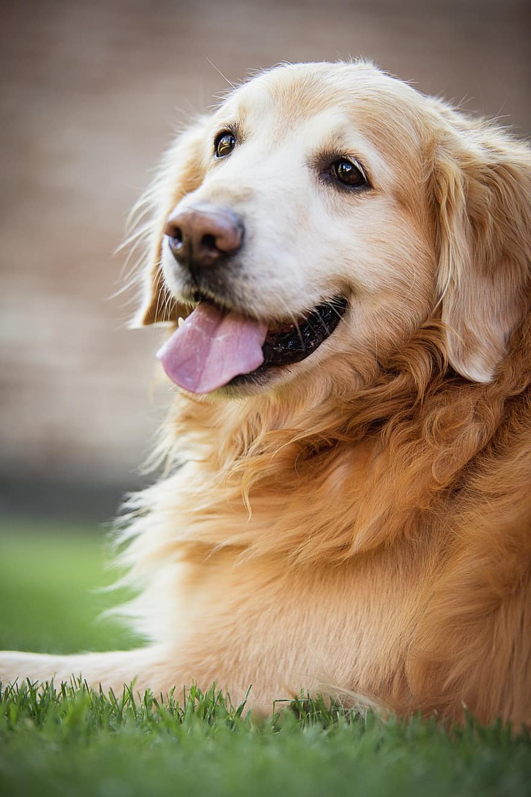

Golden retriever – rasa psa, należąca do grupy psów aportujących, płochaczy i psów wodnych, zaklasyfikowana do sekcji psów aportujących.Typ wyżłowaty. Podlega próbom pracy.

Golden Retriever od lat zajmuje jedno z czołowych miejsc w klasyfikacji ulubionych psów Polaków.
Długość życia: 10 do 12 lat
Waga: Samica: 25–32 kg, Samiec: 30–34 kg
Umaszczenie: Ciemnozłoty, Jasnozłoty, Biały, Złoty
Wysokość w kłębie: Samica: 51–56 cm, Samiec: 56–61 cm